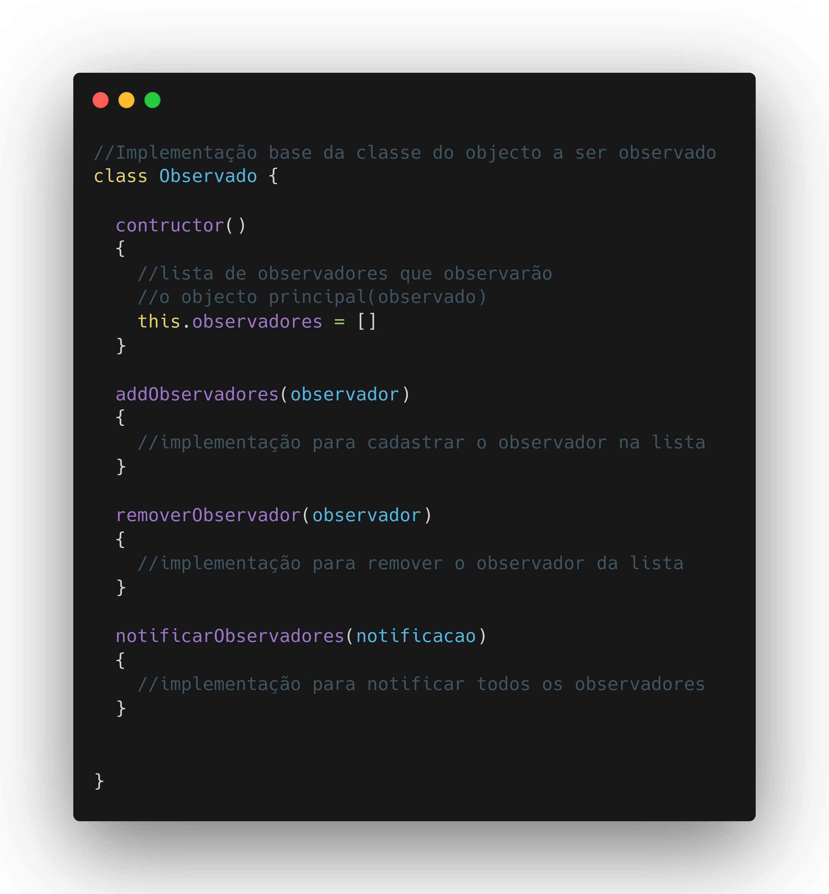
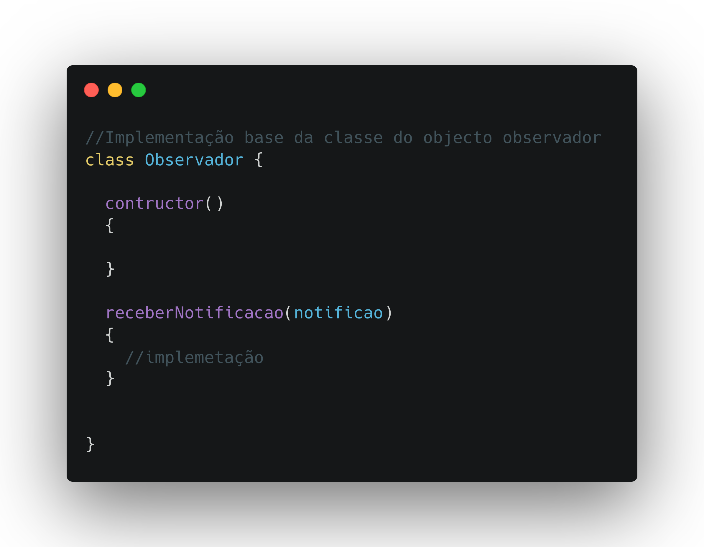
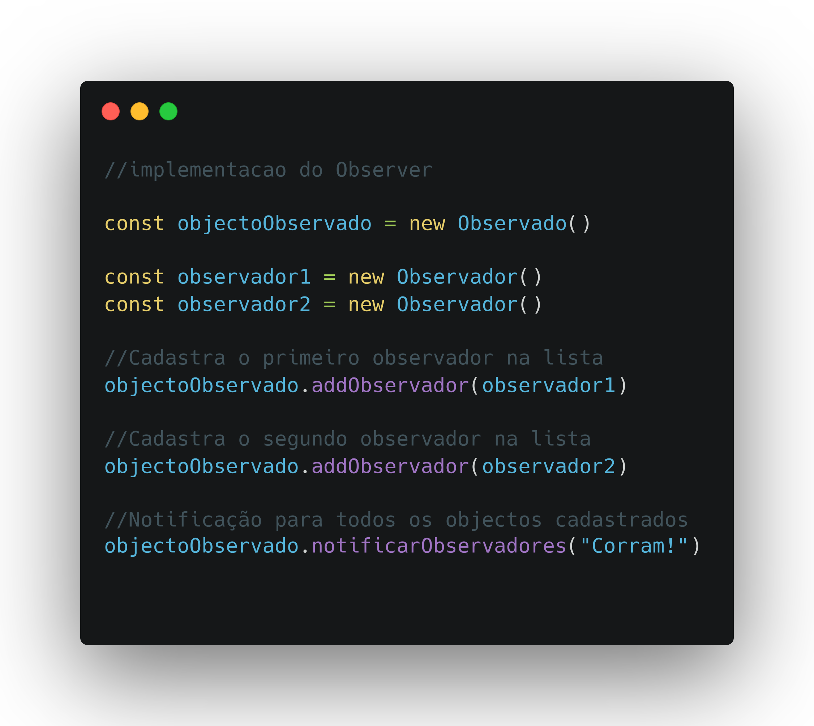

O padrão de projecto de software Observer(observador), é um padrão de construção de software da categoria comportamental que cosiste na criação de um objecto Observado por um ou multiplos Observadores que receberão notificações para efectuar alguma acção.
Eu não sei explicar muito bem em palavras, mas vou deixar aqui uma descrição em código kkkkk, espero que entendam.

Outros métodos e atributos podem ser adicionados a esta class segundo as necessidades do seu projecto, sendo que a lista de observadores e os métodos acima são obrigatórios porque descrevem a funcionalidade básica de um objecto a ser observado.


Espero que consegui passar um pouco do meu conhecimento para sí, Obrigado por chegar até aqui!